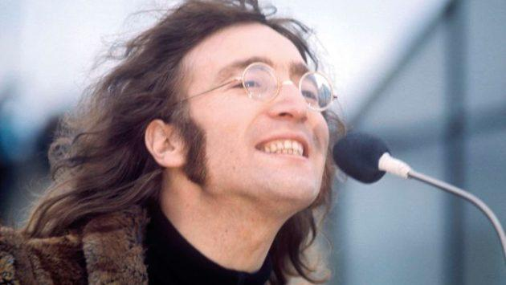
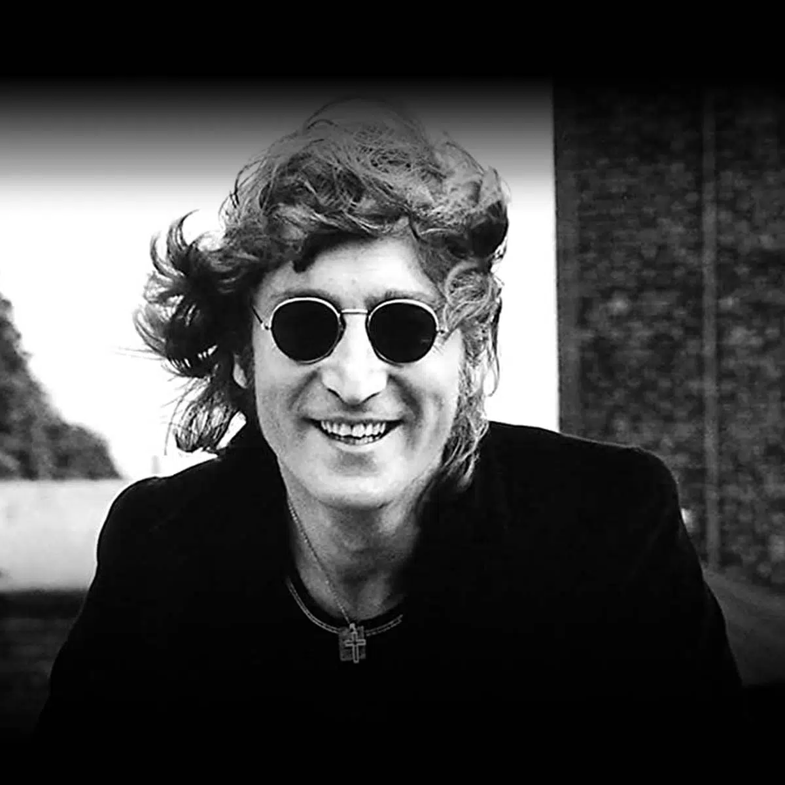
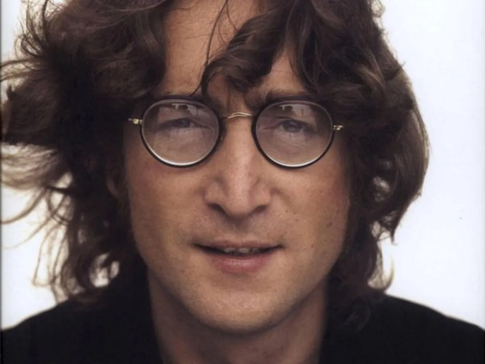

Biografía resumida de John LennonJohn Winston Lennon Stanley nació en Liverpool (Inglaterra) el 9 de octubre de 1940.Sus padres fueron Alfred Lennon (marino mercante) y Julia Stanley. Cuando tenía 5años, sus padres se separaron y John se fue a vivir a casa de su tía Mary Stanley.Siendo niño aprendió a tocar la armónica, banjó y la guitarra. Asímismo, fue admiradordel cantante Elvis Presley. Estudió en la Quarry Bank High School de Liverpool, dondefue un alumno bromista e indisciplinado. A los 16 años ingresó al Instituto de Arte deLiverpool, pero su constante rebeldía provocó que fuera expulsado.En setiembre de 1956 fundó la banda The Quarrymen, la que cuatro años despuésconvirtió en The Beatles junto a Paul McCartney, George Harrison y Stuart Sutcliffe.Liderando este grupo, Lennon se hizo famoso a nivel mundial, siendo el compositor ocantante de varios de sus grandes éxitos, como: "Twist and Shout", "All You Need IsLove" y "Help!". Entre 1962 y 1967, estuvo casado con Cynthia Powell, con quien tuvoun hijo: Julian (1963). En 1969, se casó con la artista japonesa Yoko Ono y disolvió elgrupo The Beatles.Entre 1970 y 1975, Lennon siguió su carrera como solista y lanzó varios éxitos, siendoel mayor de ellos la canción "Imágine" (1971), que se convirtió en un himno de la pazmundial. Paralelamente, colaboró como compositor o productor de importantesartistas como Ringo Star, Mick Jagger y David Bowie. En 1975, nació su hijo SeanLennon Ono y se retiró por cinco años de la industria musical para dedicarse de lleno asu vida familiar.En 1980, regresó a la música con su álbum titulado Double Fantasy. Tres semanasdespués fue asesinado cerca de su vivienda en Nueva York. El 8 de diciembre de 1980,recibió cinco disparos por parte Mark David Chapman, un desquiciado que queríapasar a la Historia por tal crimen. John Lennon fue llevado al Hospital Roosvelt, perollegó sin vida